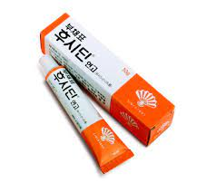
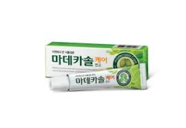
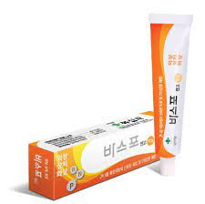
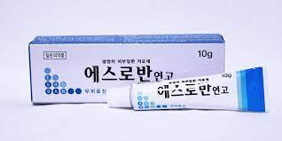

| 약 이미지 | 약 이름 | 약 성분 | 약 주요 효능,효과 | 약 가격 |
|---|---|---|---|---|
|  | 후시딘 | 퓨시드산나트륨 | -농피증(고름피부증)(농가진(고름딱지증), 감염성습진양피부염, 심상성여드름(보통여드름), 모낭염, 종기 및 종기증, 화농(곪음)성한선염, 농가진(고름딱지증)성습진), 화상ㆍ외상(상처)ㆍ봉합(꿰맴)창ㆍ식피창(피부이식 후 생긴 상처)에 의한 2차 감염에을 예방 환부를 깨끗이 하고 1일 1~2회 적당량을 환부에 직접 바르거나 무균거즈에 넓게 펴 발라 붙임 |
5,500원 |
|  | 마데카솔 | 센텔라정량추출물, 히드로코르티손아세테이트, 네오마이신황산염 | -감염 위험이 적은 일반적인 상처나 민감한 피부의 상처,가벼운 화상에 바르면 효과적이다. -1일 1~2회질환 부위에 적용한다. |
5,500원 |
|  | 바스포연고 | 바시트라신, 네오마이신황산염, 폴리믹신B황산염 | 경미한[가벼운] 베인 상처, 긁힌 상처, 화상의 감염방지 -상처부위를 깨끗이 하고 1일 1~3회 적당량을 상처부위에 바른다. |
4,000원 |
|  | 에스로반연고 | 무피로신 | 농가진(고름딱지증),모낭염,종기증,감염성 습진과 같은 세균성 피부 감염증의 사용한다. -감염부위를 1일 2~3회 10일간 소량을 바른다. - 3~5일간 사용후 개선효과가 나타나지 않으면, 의사또는 약사와 상의해야한다. |
3,000원 |